Sistema Gerenciador de Banco de Dados Oracle
Objetivo
A arquitetura de banco de dados Oracle visa definir como, porque e quando utilizar o SGBD Oracle em soluções tecnológicas na CAIXA.
O conteúdo aqui disponibilizado deverá servir como base para orientar equipes e áreas envolvidas sobre as soluções utilizadas, quando utilizar cada arquétipo arquitetural e na avaliação de viabilidade e aplicação, conforme o caso, diante das estratégias de negócios e premissas estabelecidas pela área responsável na SUART.
Arquitetura implantada (ATUAL)
Atualmente, existe uma arquitetura ainda descentralizada dos ambientes Oracle, com diferentes arquiteturas implementadas, tanto de instruction set (modelo abstrato de um computador, cuja implementação é conhecida como CPU) como de sistemas operacionais e tecnologias de virtualização.
As arquiteturas existentes são:
-
Oracle Solaris Zones [1] em sistema operacional Solaris em arquitetura Sparc;
-
VMware ESXi em sistema operacional Red Hat Enterprise Linux em arquitetura X86/X64;
-
Appliance Exadata Oracle.
A figura a seguir apresenta as arquiteturas atuais.
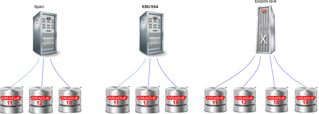
As versões utilizadas para as soluções corporativas vão da 11.2.0.4.0 até a versão 19.0.0.0.0.
Em máquinas Sparc e em máquinas X86, identificamos instalações standalone, bem como ambientes com RAC (Real Application Clusters), conforme mostra a figura a seguir.
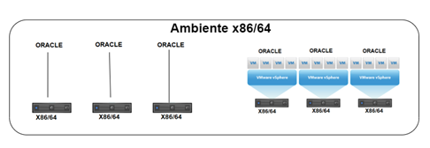
O appliance Exadata está sendo utilizado como principal processador do banco de dados Oracle, que conta também com o recurso Zero Data Loss Recover Appliance (ZDLRA), responsável pelo backup das bases de dados. No entanto, para os demais bancos de dados Oracle, o backup é realizado de forma tradicional, utilizando a base online e impactando diretamente a janela transacional dos sistemas.
Além disso, o recurso Oracle Active Data Guard (ADG) do appliance Exadata está habilitado para todos os bancos, e são replicados para outro applicance Exadata, entre os datacenters CTC e DTC, no formato ativo-passivo, permitindo a implementação de disaster recovery [2]. No entanto, para os demais bancos de dados Oracle, a replicação de dados é realizada de forma manual, por dump, impossibilitando a recuperação de objetos ou de estruturas de dados específicas, ou até mesmo de implantação de disaster recovery.
Atualmente, estão sendo realizados alguns testes de utilização do Exadata Hybrid Columnar Compression - EHCC em produção, no intuito de reduzir o tamanho de grandes tabelas/databases, endereçando a falta de disco no Exadata.
Negocialmente, as bases do Oracle na CAIXA estão organizadas por segmento de negócio, dentre eles:
-
Segmento bancário;
-
Segmento negocial;
-
Segmento social.
Fisicamente, as máquinas estão organizadas por ambientes, tais como:
-
Ambiente não produtivo (NPRD)
- Servidores de desenvolvimento (DES), de homologação (HMP) e de teste e qualidade (TQS);
-
Ambiente produtivo (PRD)
- Servidores de produção (PRD).
A figura a seguir apresenta a implementação dos recursos e ambientes apresentados acima.
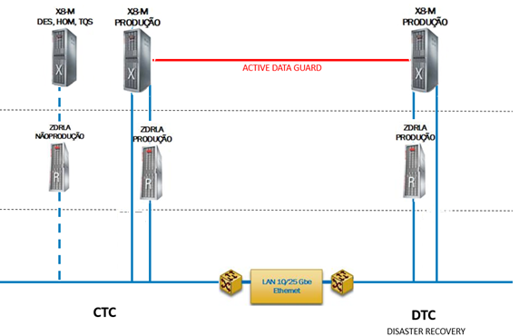
Em função da heterogeneidade de soluções do parque tecnológico CAIXA, observamos uma descentralização das instâncias Oracle, com diversas versões de RDBMS instaladas, alta diversidade de charsets (páginas de codificação) nas instâncias criadas e utilização de conjuntos de options diferentes, o que acaba dificultando a administração das instâncias, que é feita, em grande parte, de forma manual e individualizada, por meio de scripts de bancos de dados, aumentando a incidência de erros, apesar de já existir algum gerenciamento dos ambientes Oracle (bases de dados e aplicativos) feito através de algumas ferramentas disponibilizadas pelo Oracle Enterprise Manager (OEM).
Na arquitetura atual, as tecnologias descontinuadas e ultrapassadas, portanto, sem suporte, geram problemas de desempenho e escalabilidade nas aplicações, o que é agravado pela falta de ferramentas disponíveis para análise/melhoria de performance.
Outro fator que dificulta o gerenciamento das instâncias Oracle é o trabalho manual de cadastramento e concessão de acesso aos usuários diretamente na instância Oracle, ao invés de utilizar ferramentas de diretório.
Além disso, não há um processo de preparação e instalação de novos ambientes, fazendo com que cada nova instalação exija a realização de todo o do processo, o que aumenta o tempo de disponibilização de ambientes.
De forma resumida, os desafios encontrados para a arquitetura atual incluem:
-
Falta de padronização;
-
Dificuldade de escalabilidade;
-
Segurança;
-
Disponibilidade;
-
Múltiplas arquiteturas de hardware;
-
Gestão descentralizada dos bancos de dados e sistemas operacionais;
-
Versões de SGBD e SO em backlevel;
-
Falta de padrão de soluções de Disaster Recovery;
-
Falta de padrão de execução de backup.
Arquitetura definida (FUTURA)
A arquitetura futura consiste na centralização e consolidação das bases de dados Oracle no aplliance Exadata[3], implementado de forma integrada, de maneira a mitigar os dificultadores elencados na arquitetura atual e prover padronização, escalabilidade, segurança, disponibilidade, conformidade, centralização das arquiteturas de hardware, gestão centralizada dos bancos de dados e sistemas operacionais, e aumento da implementação de soluções de disaster recovery e execução de backup.
O appliance Exadata provê uma estrutura otimizada de hardware e software integrados, que possuem capacidade de prover melhor desempenho e resiliência, sendo composto por servidores distribuídos, rede interconectada, plataforma de discos, memória e softwares especializados dentro de uma única solução. Por permitir a adição de nós ou RACs, é uma solução que apresenta alta escalabilidade scale-in (escalabilidade vertical) e scale-out (escalabilidade horizontal), de forma transparente e rápida.
Com o objetivo de mitigar problemas de disponibilidade causados pelo armazenamento, a nova solução conta ainda com técnicas avançadas de identificação e tratamento de erros de I/O, como Machine Learning e IA, o que possibilita manter os serviços disponíveis, mesmo com problemas no armazenamento, além da redundância de servidores, rede e plataforma dos discos, que provê alta disponibilidade para a solução.
A figura a seguir apresenta a proposta de arquitetura para o ambiente Oracle, com o uso do appliance Exadata e as versões suportadas.
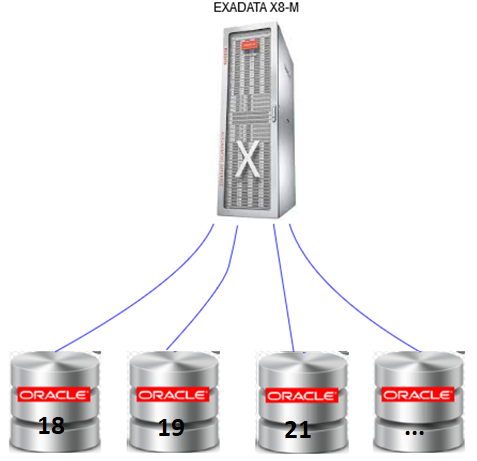
Além da implementação essencialmente utilizando o appliance Exadata, propomos:
-
Utilização das ferramentas do Oracle Enterprise Manager (OEM) de maneira mais significativa para permitir um gerenciamento mais eficiente dos ambientes Oracle;
-
Utilização de padrão para os charsets (páginas de codificação) nas instâncias criadas;
-
Utilização de uma solução para manutenção da integridade das alterações nas bases de dados e nos testes de aplicação e de seus módulos, como o Oracle Real Application Testing (RAT), que permite verificar inconsistências para atualização de versões, por exemplo, antecipando possíveis erros de migração de versões de banco de dados;
-
Utilização mais significativa e padronizada da compressão de dados, principalmente do Exadata Hybrid Columnar Compression - EHCC, para maximizar a utilização dos recursos e diminuir os custos, ao reduzir significativamente o espaço de banco de dados armazenamento geral, além da economia de recursos e os custos de tecnologia de todos os componentes de sua infraestrutura de TI, incluindo memória e largura de banda na rede;
-
Definição de parâmetros de retenção dos dados para as aplicações, considerando os conjuntos de dados que representam o ciclo de vida dos dados, tais como, o conjunto de dados críticos para as transações das aplicações, o conjunto de dados utilizados na geração de relatórios, o conjunto de dados utilizados para análises e consolidações históricas, o conjunto de dados que podem ser "expurgados" (backup). Essa definição é essencial para a criação de uma estratégia de armazenamento e processamento mais adequada às necessidades das aplicações e mais eficiente técnica e financeiramente.
Critérios
A arquitetura proposta se aplica a novas aplicações corporativas críticas, com requisitos complexos, muitos dados e grande concorrência entre usuários, e onde houver a necessidade de uma maior complexidade de recursos de segurança, disponibilidade, escalabilidade e performance.
A versão recomendada de utilização do Oracle, para novos sistemas, deve levar em consideração a versão mais atual do software pelo fabricante e homologada pela CAIXA, utilizando como referência os termos descritos na TE111.
Recomendamos que a versão mais antiga não deve ser inferior a Oracle Database 18c Enterprise Edition Release 18.0.0.0.0.
Esta proposta está em acordo com a política de migração de bases de dados adotada pela CAIXA para esta nova plataforma, permitindo ganhos significativos, dentre eles, padronização e melhoria na gestão dos ambientes.
Da mesma forma, para a utilização do banco de dados Oracle em aplicações não críticas, ou para armazenamento de tabelas de histórico/log, propõem-se utilizar a implementação do Oracle em máquinas SPARC / X86, por exemplo, de forma a economizar recursos, principalmente de disco.
Tecnologias
Ambiente Atual
Appliance Exadata
O Exadata[5] é um appliance otimizado para executar databases Oracle, constituída de hardware e software scale-out e scale-int (escalonamento horizontal e vertical), servidores de armazenamento, rede, memória e softwares especializados, que provê padronização, escalabilidade, segurança e performance, além da implementação de soluções de Disaster Recovery, backup e replicação.
Cada RAC pode crescer até 22 nós de processamento (independente da composição de nós de processamento/armazenamento) por máquina.
Ao contrário do processamento tradicional, o Exadata possui recursos especializados que otimizam o armazenamento dos dados do Oracle. O recurso Exadata Storage Server processa os dados ao nível de storage e transfere somente o necessário aos servidores de dados, ou seja, o armazenamento possui capacidade de processamento independente do processamento realizado pelo SGBD.
O armazenamento é realizado de forma otimizada, utilizando o Flash Cache [6], composto por discos que chegam a ser 50x mais rápidos que os discos comuns, distribuindo em memória cache os acessos frequentes à base de dados.
A estrutura interna do equipamento é representada na figura a seguir.

Os componentes principais da arquitetura do appliance Exadata são:
-
Cell Services (cellsrv) é o software primário que é executado nas células de armazenamento. É um programa multi-thread que provê serviços de I/O, liberando o banco de dados de processar o I/O.
-
Input/Output Resource Manager (IORM) administra o I/O na célula de armazenamento, organizando as requisições em filas de acordo com o database name, categoria, ou consumer group que iniciou a requisição. O IORM processa as filas de acordo com a prioridade definida no plano de recurso.
-
Switches Infiniband são conjuntos de switches que provém uma conexão de 40 Gb/segundo, entre os nodes e as células de armazenamento.
O Exadata executa em servidores com sistema operacional Oracle Linux 7 e é compatível com o Oracle versão 11g até a 21c e, é responsável por administrar os serviços de migração, incluindo hardware, rede, software Linux e todos os softwares relacionados.
O appliance Exadata X8-M [15] melhora a performance através de duas melhorias principais: a Memória Persistente (PMem) [16] e o RDMA (Remote Direct Memory Access), através de Converged Ethernet (RoCE) [17]. O appliance Exadata utiliza o RDMA diretamente do database para acessar a memória persistente em servidores inteligentes, retirando os gargalos de rede, sistema operacional e I/O. Esse recurso endereça de forma direta os problemas de latência e throughput.
O appliance provê redes de alta velocidade para conexão interna e externa. Uma rede interna de 100 Gbits/s é utilizada internamente para conexão entre os servidores de processamento e de armazenamento, enquanto portas Ethernet de 25 e 10 Gbits/s são utilizadas para conexões entre os datacenters (CTC e DTC).
A implementação de bancos de dados Oracle no Exadata Cloud Service é 100% compatível com os databases on-premises, o que permite a transição para o ambiente de nuvem, de forma transparente para as aplicações.
A implementação de Storage Servers no Exadata apresenta 2 tipos de redundância de dados. A proteção ALTA (fator 3) e NORMAL (fator 2), onde o fator corresponde a quantidade de nós em que o dado será distribuído, sendo 3 ou 2 nós.
Na CAIXA, o fator de proteção implementado é o ALTO, considerando alguns pontos:
-
Appliance destinado a execução de aplicações críticas;
-
Os discos SATA utilizados pelo Exadata apresentam uma taxa maior de corrompimento;
De forma a tratar a segurança e disponibilidade, o número mínimo de diskgroups sugerido é o de 2. Um para os dados e outro para recovery -- redo, archive, flasback, controlfile etc.
O appliance Exadata traz grande ganho de administração e performance para o SGBD Oracle, e sua utilização é recomendada sempre que existirem recursos disponíveis no ambiente.
Zero Data Loss Recover Appliance (ZDLRA)
O Zero Data Loss Recovery Appliance (ZDLRA) [9] é uma solução de proteção de dados, baseada na plataforma Exadata e firmemente acoplada com o database Oracle e o Recovery Manager (RMAN).
Um dos benefícios do ZLDRA é a eliminação dos backups completos diretos da base transacional, uma vez que só os dados alterados são propagados. Desta forma, diminui os recursos computacionais utilizados, como servidores, armazenamento, I/O e recursos de rede.
Além disso, o ZLDRA permite a realização de backup sem interferir no sistema transacional, o que provê alta disponibilidade para a aplicação.
A utilização do ZLDRA na CAIXA tem como objetivo diminuir o risco de perda de dados, além de facilitar a execução e armazenamento dos backups, que eram gravados em área temporária e posteriormente em fita. No entanto, deve ser utilizado apenas como uma primeira camada de backup, considerando outra solução para retenções mais longas.
Sua inclusão na arquitetura permite evitar a lentidão dos sistemas, pois a gravação diretamente em mídias magnéticas geralmente ocorre de maneira muito lenta.
O ambiente ZLDRA, deve conter, no mínimo, um servidor de Recovery e um database protegido, onde cada database protegido envia backups e real-time redo log para o servidor de Recovery, conforme mostra a figura a seguir.
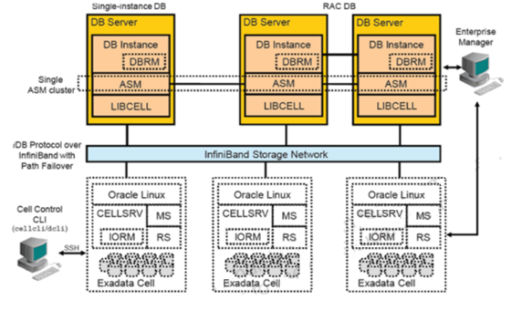
Os databases protegidos podem rodar em versões diferentes do Oracle, utilizam um ZLDRA centralizado como destino de backup RMAN e de recuperação de dados e cada database protegido pelo appliance deve utilizar o catálogo central do database.
Os databases protegidos devem ser configurados de forma a permitir o acesso ao aplliance. A configuração consiste em criar os usuários e as permissões apropriadas, associar cada database a uma política de proteção e distribuir as credenciais do appliance para cada database conectado.
A retenção projetada inicialmente é de 10 dias, com possibilidade de extensão, caso existam volumes disponíveis.
A utilização dessa ferramenta é recomendada para soluções com necessidade de alta disponibilidade e de disaster recovery.
Active Data Guard (ADG)
O Oracle Active Data Guard (ADG) [10] é um dos vários componentes da solução Oracle que garante alta disponibilidade, proteção de dados e disaster recovery. Esse componente entrega a capacidade de sobreviver a desastres e corrupção de dados, contudo, permite apenas a replicação entre databases Oracle.
Endereça o problema de disaster recovery e segurança.
O ADG provê 2 funcionalidades principais: a proteção de dados completa e o uso eficiente de recursos.
Quanto à proteção de dados, o ADG permite o reparo automático da corrupção de blocos, restaurando as duas bases a partir do nó de replicação, quando lidos na base primária. O reparo da base replicada também é possível a partir do nó principal.
Quanto ao uso eficiente de recursos, as tabelas do database de standby recebidas do database primário podem ser usados para backups, relatórios e queries, reduzindo o workload [11] e economizando CPU e I/O. Os dados são atualizados de forma constante, conforme mostra a figura a seguir.
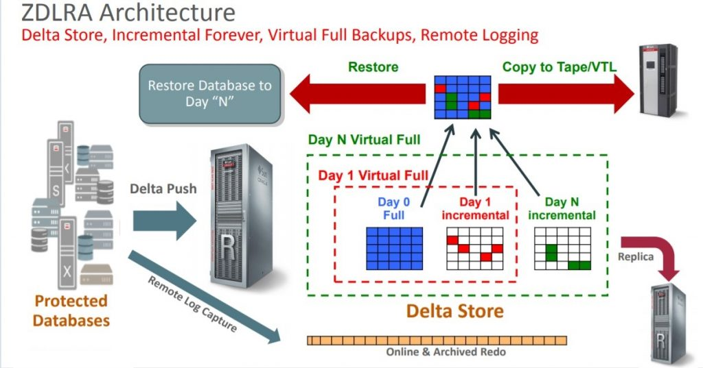
Conforme a figura acima, os componentes do ADG são:
-
Database primário: Database de produção, que contém as requisições de escrita e leitura dos sistemas transacionais.
-
Database Standby: Cópia do database primário, que administra requisições read-only, de forma que as transações possam ser descarregadas do database primário.
-
Active Data Guard: Sincroniza os dados armazenados entre os databases primários e standby, de forma a mantê-los exatamente iguais.
-
Primary Access ID: Identificação de usuário usada para conectar ao database primário.
-
Secondary Access ID: Identificação de usuário usada para acessar o database standby.
A proposta de arquitetura prevê um ambiente ADG de forma a conter uma ou mais cópias do banco de dados de produção, que poderá ser utilizado se ocorrer alguma falha física ou lógica.
O ADG possibilita a reprodução automática de transações, execução de leituras nos nós de réplica, desonerando o banco de dados principal que fica dedicado às transações e manipulação de dados, execução de backups incrementais mais rápidos e automação de processos de manutenção. Desta forma, workloads que prejudiquem a aplicação no ambiente atual devem ser direcionados para o database standby, sempre que possível.
Existem 3 tipos de configuração possíveis, conforme a seguir:
-
Modo de proteção máxima garante que nenhuma perda de dados ocorrerá, mesmo se o database primário falhar, inclusive no caso de múltiplas falhas. Isso é garantido de forma que o commit só é sinalizado como sucesso quando alguma cópia standby esteja atualizada de forma síncrona.
-
Modo de disponibilidade máxima garante que nenhuma perda de dados ocorrerá em casos em que o database primário sofra a primeira falha que impacte a replicação. Ao contrário da "proteção máxima", após uma quantidade de segundos o sinal de commit é replicado para a base standby e passa para a próxima transação.
-
Modo de performance máxima provê o maior nível de proteção sem afetar a performance ou a disponibilidade da aplicação. Isso é garantido pela transmissão assíncrona diretamente do buffer de log primário. Não há espera no database de standby, sendo a replicação caracterizada como real-time.
Na CAIXA, utilizamos o modo performance máxima, de forma a entregar performance e disponibilidade das aplicações.
O Oracle Active Data Guard precisa ser licenciado, instalado e habilitado antes da utilização dos recursos.
A utilização dessa ferramenta é recomendação para as soluções/sistemas que necessitam de alta disponibilidade e performance.
Oracle Enterprise Manager (OEM)
O Oracle Enterprise Manager (OEM) [14] é um conjunto de ferramentas de gerenciamento de ambientes Oracle (bancos de dados e aplicações), baseado na web, que fornece uma solução abrangente de administração e monitoramento desses ambientes, e pode ser executado on-premises e na Oracle Cloud.
Além de monitoramento dos ambientes Oracle, o OEM fornece ferramentas para automatizar as tarefas de administração de banco de dados e de aplicativos, inclusive de forma repetitiva, e executa grande parte de sua atividade através de agentes inteligentes, conhecidos como Agentes de Gerenciamento Oracle, que funcionam como processos autônomos em um nó gerenciado e realizam tarefas de execução e monitoramento para o OEM, comunicando-se utilizando o protocolo de transferência de hipertexto.
A figura a seguir apresenta algumas das ferramentas disponibilizadas pelo OEM.
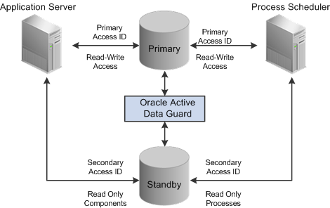
Com o OEM é possível realizar as seguintes atividades:
-
Gerenciamento do desempenho do banco de dados
- Monitorar e gerenciar uma propriedade Oracle Database inteira a partir de uma visão centralizada, na nuvem e on-premises, fornecendo uma análise profunda, integrada e automatizada que ajuda os DBAs a encontrar rapidamente problemas de desempenho, corrigi-los e validar as correções antes de promovê-los para a produção;
-
Automação de processos
- Automatizar todas as tarefas, incluindo o provisionamento de novos clusters, aplicação de patches e upgrade de bancos de dados, bem como gerenciamento de configuração e conformidade;
-
Gerenciamento do appliance Exadata
- Monitorar e gerenciar todos os bancos de dados, clusters e componentes de hardware em uma única visão, incluindo o uso de alertas para implementar um gerenciamento de configuração proativo e responsivo;
-
Monitoramento centralizado
- Monitorar detalhadamente os bancos de dados Oracle de forma centralizada, a partir de uma visão completa da pilha de tarefas em execução on-premises ou na Oracle Cloud Infrastructure;
-
Gerenciamento de middleware
- Gerenciar camada de middleware da Oracle, facilitando o trabalho dos administradores ao fornecer uma solução de ciclo de vida completo, incluindo o gerenciamento de configuração e conformidade, aplicação de patches, provisionamento e gerenciamento de desempenho e auditoria;
-
Gerenciamento de aplicativos
- Acompanhar o desempenho de aplicações personalizadas e aplicativos Oracle;
-
Extensibilidade
- Utilizar diversos recursos de visualização, desde a personalização de painéis prontos para uso até o uso do aplicativo Enterprise Manager for Grafana, além da utilização de APIs REST para interoperar com ferramentas de terceiros;
-
Plataforma robusta
- Monitorar e gerenciar bancos de dados com alta criticidade, middleware e tecnologia de aplicação, a partir de uma plataforma resiliente, que possui recursos que permitem a atualização rápida da plataforma para aplicação de patches e atualizações, monitoramento e diagnóstico de integridade proativos e opções flexíveis de implantação de alta disponibilidade;
O OEM possui três componentes principais conforme mostra a tabela a seguir.
|
Componente |
Função |
|
Console |
O console dá um ponto de controle central do ambiente Oracle através
de uma GUI (graphic user
interface) que provê uma ampla administração do sistema. |
|
Servidor de Administração |
O servidor de administração faz a autenticação dos usuários de
administração e provê um repositório central para os dados administrativos. |
|
Agente de Inteligência |
O agente de inteligência executa os jobs
e eventos enviados pelo console através dos servidores de administração. |
A utilização do OEM e suas várias ferramentas na Caixa ainda não acontece de forma global e, como regra geral, é fortemente recomendada para a realização de um gerenciamento mais eficiente de ambientes Oracle.
Exadata Hybrid Columnar Compression - EHCC
O Exadata Hybrid Columnar Compression (EHCC) [7] é um recurso incluso no Exadata Storage Server, que proporciona um alto nível de compressão de dados sobre objetos em um banco de dados Oracle e oferece a capacidade de personalização do nível de compressão, dependendo do tipo de ambiente, OLTP (leituras e gravações frequentes em dados não sequenciais) ou Data Warehousing (consultas frequentes para grandes quantidades de dados), e retirando do SGBD o overhead de realizar a tarefa de compressão/descompressão.
O EHCC pode ser utilizado em nível de tabela, de partição ou de tablespace e, de maneira geral, possui as seguintes características:
-
As tabelas são organizadas em Unidades de Compressão (UC), conforme mostra a figura a seguir.
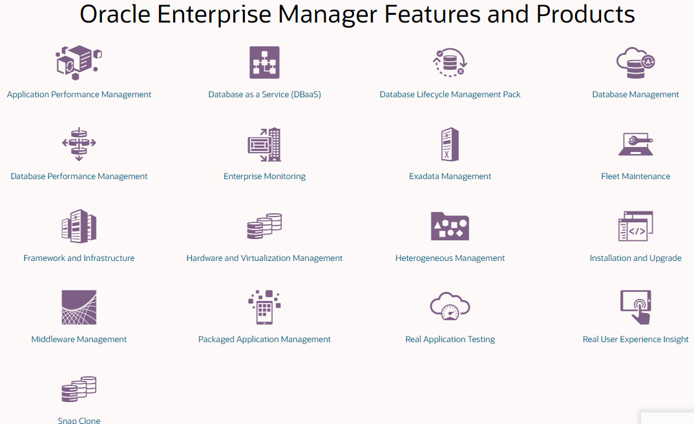
-
As UCs são maiores do que os blocos do banco de dados;
-
Com as UCs, os dados são organizados por colunas e não por registros;
-
Cada coluna é comprimida separadamente;
-
A redução média de armazenamento varia entre 10x e 15x;
-
A descompressão dos dados é realizada pelo Exadata Storage Server;
-
Se a tabela for particionada, é permitido utilizar diferentes formas de compressão para ela;
-
Não é recomendado para tabelas que são modificados com frequência;
-
Não é permitido em tabelas do tipo Index Organized Tables (IOT).
A compressão em ambientes do tipo OLTP, chamada Online Archival Compression, tem o foco na compressão máxima dos dados, é adequada para dados que não mudam com frequência e está disponível em duas opções: Archive High e Archive Low.
A seguir, são apresentados alguns exemplos de utilização do EHCC para o ambiente do tipo OLTP.
create table Comp3 (a number) compress for archive high;
create table Comp4 (a number) compress for archive low;
A compressão em ambientes do tipo Data Warehouse, chamada Warehouse Compression, tem o foco na otimização do desempenho de consultas e está disponível em duas opções: Query High e Query Low.
A seguir, são apresentados alguns exemplos de utilização do EHCC para o ambiente do tipo Data Warehouse.
create table Comp1 (a number) compress for query high;
create table Comp2 (a number) compress for query low;
O EHCC permite que o banco de dados reduza o número de leituras e gravações físicas necessárias para utilizar uma tabela, por isso grandes quantidades de dados podem ser processadas rapidamente sem gerar altas taxas de I/O.
A utilização do EHCC deve ser considerada para endereçar os problemas de alta utilização dos discos existentes atualmente, inclusive para dados históricos por se tratar de dados com menor probabilidade de updates e transações.
O EHCC já está sendo utilizado de forma experimental na Caixa, no entanto, a recomendação é usar a compressão em TODAS as tabelas do sistema transacional, que não façam parte do caminho crítico da aplicação, exceto as tabelas utilizadas como uma fila, ou seja, as tabelas em que todas as suas linhas são inseridas e a maioria deletadas após um período e, em seguida, mais linhas são inseridas e deletadas novamente.
Além disso, há uma forma de verificar a necessidade de compressão em um banco de dados Oracle, que é utilizando a package DBMS_COMPRESSION, que coleta informações relacionadas à compressão de dados, incluindo estimativas do nível de compressão para uma determinada tabela, particionada ou não-particionada. Isto é bastante útil para o DBA, que terá subsídios importantes ao tomar a decisão pela compressão dos objetos de bancos de dados. No entanto, é importante executar essa package somente quando não houver muita carga de trabalho no banco de dados.
Oracle Real Application Testing (RAT)
O Oracle Real Application Testing (RAT) [13] é uma solução de gerenciamento de desempenho proativo, extremamente econômica e fácil de usar, que permite às empresas avaliar totalmente o resultado de uma alteração do sistema em teste ou em produção, além de apoiar a manutenção da integridade das alterações nas bases de dados e nos testes de aplicação. O RAT captura os workloads de produção e propicia a análise das mudanças no comportamento das aplicações antes da implantação em produção.
O RAT é composto por dois módulos principais: o SQL Performance Analyzer e o Database Replay, apresentados a seguir.
O RAT já é utilizado na Caixa, no entanto, sua utilização é fortemente recomendada para obter benefícios nos processos de mudanças de estrutura como upgrade de versões de SGBDs, consolidação de bases, alterações de ambientes, além das mudanças operacionais como implementação de profiles, atualização e aplicação de estatísticas, memória e objetos de bancos de dados.
Ambiente Futuro
SQL Performance Analyzer (SPA)
O SQL Performance Analyzer é um módulo do Oracle Real Application Testing (RAT), que automatiza o processo de análise de alterações em instruções SQL, a partir da entrega de planos de execução e recomendações de melhoria de performance, tornando possível validar qualquer alteração em ambiente produtivo, antes e após sua realização.
Desta forma, o Oracle RAT deve ser utilizado como regra para obtenção de ganhos relacionados a performance de aplicações, alterações em estruturas de objetos, servidores, rede e mudanças operacionais, como coletas de estatísticas e alteração de parâmetros.
O SPA Quick check disponibiliza métricas de comparação, como geração de buffer, tempo de CPU, custos diversos, podendo ser coletados para o database inteiro ou para objetos ou schemas específicos.
É possível executar o SPA em ambiente produtivo ou em ambiente de testes, porém, se executado em produção aumenta o consumo de recursos, pois o SPA executa o procedimento SQL que está sendo testado. Desta forma, a indicação é que os testes e relatórios contidos na ferramenta devem ser realizados em ambiente adequado, diferente do produtivo.
O SPA é indicado para testar vários tipos de mudança:
-
Upgrade de versões do SGBD;
-
Criação/drop de índices, coleta de estatísticas etc.
Database Replay
O Database Replay é um módulo do Oracle Real Application Testing (RAT), que captura um workload do ambiente de produção e replica em ambientes de testes, com a mesma temporalidade, concorrência e características de transação do workload original. Desta forma, é possível testar mudanças no ambiente e no sistema sem afetar o ambiente produtivo.
A reprodução do workload permite a avaliação de vários fatores relacionadas a aplicação e o sistema de banco de dados, como latência, tempo de execução, tempos de wait e problemas relacionados a I/O.
O ambiente disponibilizado para testes deve conter estrutura apropriada de servidor, disco, rede e demais recursos, de forma a refletir o ambiente capturado.
O Database Replay endereça a necessidade de análise de performance e melhorias para as aplicações, copiando o ambiente de produção para um ambiente de testes.
É extremamente útil, por exemplo, para validar sistemas que apresentam um grande crescimento vegetativo, mas os ambientes de testes e de validação do gestor não possuem as características necessárias para a verificação de performance da aplicação. Com o database replay é possível verificar se há necessidade de particionamento de tabelas e quais critérios a serem utilizados, alterações de estatísticas, além de criação de novos objetos visando a melhoria do desempenho da aplicação.
Oracle GoldenGate
O Oracle GoldenGate [12] é um produto que permite replicação, filtro e transformação de dados de um database origem para um destino, permitindo mover os dados de transações entre sistemas heterogêneos, como outros tipos de SGBDs.
Endereça o problema de replicação de dados e possui vários recursos, dentre eles:
-
Movimentação de dados em tempo real, reduzindo a latência;
-
Somente transações commitadas são transferidas, entregando consistência e melhorando a performance;
-
Diferentes versões de Oracle são suportadas com uma grande quantidade de databases heterogêneos:
-
DB2 LUW;
-
DB2 for i;
-
DB2 z/OS;
-
MySQL;
-
PostgreSQL;
-
SQL Server;
-
Teradata;
-
TimesTen.
-
-
Suporta operações DML realizadas em tabelas regulares, tabelas organizadas por índice, tabelas clusterizadas e views materializadas.
-
Suporta operações DDL nos seguintes tipos de objetos:
-
Clusters;
-
Functions;
-
Indexes;
-
Packages;
-
Procedures;
-
Tables;
-
Tablespaces;
-
Roles;
-
Sequences;
-
Synonyms;
-
Triggers;
-
Types;
-
Views;
-
Views Materializadas;
-
Users.
-
O Oracle GoldenGate possui seu próprio sistema de agendamento de execuções, mas para agendamentos mais complexos, é possível utilizar a API dbms_scheduler.
A recomendação é utilizar este recurso quando necessitar realizar replicação de dados entre bases de dados Oracle e outros SGBDs.
SQL Access Advisor (SAA)
O SQL Access Advisor (SAA) é um recurso muito útil que gera recomendações de particionamento para tabelas, índices, views materializadas e logs de views materializadas, contendo os ganhos previstos de desempenho resultantes de sua implementação. O script gerado pode ser implementado manualmente ou enviado a uma fila no Oracle Enterprise Manager.
Além das recomendações específicas para o particionamento, ele também gera uma recomendação mais abrangente para o aprimoramento do desempenho geral das declarações SQL. O Partition Advisor, integrado ao SQL Access Advisor, é parte do Tuning Pack da Oracle, uma opção extra licenciável, que pode ser utilizado a partir do Oracle Enterprise Manager ou via interface de linha de comando.
A utilização do SAA é fortemente recomendada para as atividades de melhoria contínua de performance dos bancos de dados.
Objetos, opções e utilizações na CAIXA
O Oracle possui vários tipos de objetos e inúmeras opções de configuração. Nessa arquitetura de referência, abordaremos os seguintes tipos de objetos:
-
Tablespaces;
-
Tabelas;
-
Global Temporary Tables;
-
Private Temporary Tables;
-
-
Tipos de Dados;
-
Índices;
-
Views;
-
Views materializadas;
-
Procedures;
Tablespaces
O Oracle divide um database em unidades lógicas, chamadas tablespaces. Cada tablespace consiste em um ou mais arquivos, chamados datafiles. Um datafile armazena fisicamente os objetos de dados, como tabelas e índices.
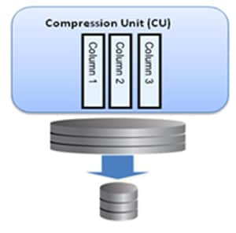
A utilização de tablespaces permite as seguintes operações:
-
Controlar o tamanho de armazenamento alocado para o database.
-
Permitir utilização de quantidades específicas de armazenamento para usuários do database;
-
Controlar a disponibilidade dos dados colocando os tablespaces como online ou offline;
-
Melhorar a performance do database alocando discos em múltiplos dispositivos.
-
Realizar backup e recovery parciais.
Os options de criação de tablespace podem ser verificados através do link [CREATE TABLESPACE (oracle.com).]{.underline}
CREATE TABLESPACE \"ARTTSDT005\"
DATAFILE \'+D01NG_1/ORAD01NG/DATAFILE/arttsdt000.dbf\' SIZE 1G LOGGING ONLINE PERMANENT BLOCKSIZE 8192
EXTENT MANAGEMENT LOCAL AUTOALLOCATE DEFAULT
SEGMENT SPACE MANAGEMENT AUTO;
Tabelas
Tabelas são estruturas lógicas, que determinam como os dados serão guardados e lidos. Os dados são mapeados em linhas e colunas.
Global Temporary Tables (GTT)
As Global Temporary Tables são estruturas permanentes de dados. As informações podem ser manipuladas usando SQL, como qualquer outra tabela. O que difere as GTT de tabelas normais são:
-
Os dados são transitórios, e só persistem durante a transação ou sessão;
-
A escrita ocorre em um tablespace temporário, ao invés de um permanente.
A seguir é apresentado um teste com tabelas GTT.
1) Criando uma GTT. O default para GTTs é \"ON COMMIT DELETE ROWS\"
SQL> create GLOBAL TEMPORARY table ART.ARTTB013_GTT(NU_GTT int NOT NULL);
Tabela criada.
SQL> insert into ART.ARTTB013_GTT values(1);
1 linha criada.
SQL> commit;
Commit concluído.
SQL> select count(*) from ART.ARTTB013_GTT;
COUNT(*)
----------
0
2) Criando a tabela de forma a manter os dados na sessão
SQL> drop table ART.ARTTB013_GTT;
Tabela eliminada.
SQL> create GLOBAL TEMPORARY table ART.ARTTB013_GTT(NU_GTT int) ON COMMIT PRESERVE ROWS;
Tabela criada.
SQL> insert into ART.ARTTB013_GTT values(1);
1 linha criada.
SQL> commit;
Commit concluído.
SQL> select count(*) from ART.ARTTB013_GTT;
COUNT(*)
----------
1
3) Como está em uso, a GTT não pode ser deletada
SQL> drop table ART.ARTTB013_GTT;
drop table ART.ARTTB013_GTT
*
ERRO na linha 1:
ORA-14452: tentativa de criar, alterar ou eliminar um índice em uma tabela
temporária que já está sendo usada
4) Mudando de sessões para verificar a GTT
C:\Users\c090290>sqlplus c090290@orad01ng
SQL*Plus: Release 11.2.0.1.0 Production on Seg Mar 21 18:56:52 2022
Copyright (c) 1982, 2010, Oracle. All rights reserved.
Conectado a:
Oracle Database 18c Enterprise Edition Release 18.0.0.0.0 - Production
SQL> select count(*) from ART.ARTTB013_GTT;
COUNT(*)
----------
0
Private Temporary Tables (PTT)
A partir da versão 18c, o Oracle introduziu o conceito de Private Temporary tables, as quais tanto os dados como a estrutura são temporários, sendo eliminados após o fim da transação ou sessão. O Oracle armazena as PTTs em memória e cada tabela temporária só é visível na sessão que a criou.
A seguir é apresentado um teste com tabelas PTT.
1) Criando uma PTT
SQL> show parameter PRIVATE_TEMP_TABLE_PREFIX
NAME TYPE VALUE
------------------------------------ ----------- ----------------------
private_temp_table_prefix string ORA\$PTT_
SQL> create PRIVATE TEMPORARY table ora\$ptt_ARTTB014_PTT(NU_PTT int);
Tabela criada.
SQL> insert into ora\$ptt_ARTTB014_PTT values(1);
1 linha criada.
SQL> commit;
Commit concluído
-- Após o commit da transação, a definição da tabela não existe mais
SQL> desc ora\$ptt_ARTTB014_PTT;
ERROR: ORA-04043: O objeto ora\$ptt_ARTTB014_PTT não existe
2) Deletando a definição após a sessão, preservando a definição existente no catálogo
SQL> create PRIVATE TEMPORARY table ora\$ptt_ARTTB014_PTT(NU_PTT int) ON COMMIT PRESERVE DEFINITION;
Tabela criada.
SQL> insert into ora\$ptt_ARTTB014_PTT values(1);
1 linha criada.
SQL> commit;
Commit concluído.
SQL> desc ora\$ptt_ARTTB014_PTT;
Name Null? Type
----------------------------------------- -------- --------------------
NU_PTT NUMBER(38)
3) Conectando com outra sessão.
SQL> connect c090290@orad01ng
Conectado.
SQL> desc ora\$ptt_ARTTB014_PTT;
ERROR: ORA-04043: O objeto ora\$ptt_ARTTB014_PTT não existe
Quadro comparativo
|
Características |
Global
Temporary Tables |
Private
Temporary Tables |
|
Regra de nomeação |
As mesmas de tabelas permanentes |
Por default, devem conter o prefixo
ORA$PTT_ |
|
Visibilidade |
Todas as sessões |
Somente pela sessão que criou a tabela |
|
Armazenamento |
Disco |
Somente em memória |
|
Tipos de tabela |
Transaction-specific (ON COMMIT DELETE
ROWS) ou session-specific (ON COMMIT PRESERVE ROWS) |
Transaction-specific (ON COMMIT DROP
DEFINITION) ou session-specific (ON COMMIT |
Índices
Um índice é um objeto que contém uma entrada para cada valor que aparece nas colunas indexadas e provê acesso direto e rápido as linhas das tabelas.
Na figura abaixo, temos uma tabela com 2 colunas e 5 linhas. Um índice foi criado na coluna "ID" da tabela e as entradas do índice incluem o row address (ROWID). O ROWID é um endereço para a localização física do registro (qual datafile, qual bloco e qual posição no bloco).
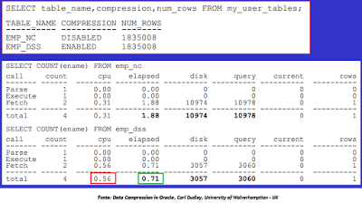
B-Tree
O índice B-Tree (árvore B), padrão do Oracle, é o mais comum e utiliza a estrutura de dados da árvore B para manter as suas entradas.
É um índice indicado para colunas com baixa duplicidade e alta cardinalidade, ou seja, colunas que possuem muita variação de valores nas linhas de uma tabela, mas que aparecem em poucas linhas da tabela.
O índice B-Tree tem entradas ordenadas, onde cada entrada possui um valor da chave de pesquisa e um ponteiro, que se refere a uma determinada linha e valor. Quando o índice é utilizado, ele verifica a chave de pesquisa para buscar o ponteiro e, então, encontrar a linha correspondente à chave de pesquisa.
Os índices B-Tree podem ser extremamente rápidos quando um pequeno conjunto de dados é coletado, na maioria dos casos, os dados não devem exceder 10% do tamanho do banco de dados.
A figura a seguir mostra uma visão geral de um índice B-Tree.
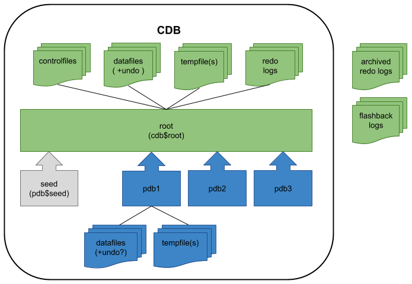
Os índices B-Tree são frequentemente utilizados em sistemas OLTP.
Bitmap
O índice Bitmap é mantido por um vetor de bits que determina a existência ou não de dado determinado dado.
É um índice indicado para colunas com alta duplicidade e baixa cardinalidade, ou seja, colunas que possuem pouca variação de valores nas linhas de uma tabela, mas que aparecem em muitas linhas da tabela. Ao criar um índice bitmap em uma coluna, o Oracle monta um mapa de bits (0 ou 1) para todas as linhas da tabela, contendo todos os valores possíveis para a coluna, indicando, para cada linha da tabela, se o valor da coluna existe (1) ou não (0) na linha.
O índice Bitmap é mais indicado para ambientes de data warehousing, devido à baixa frequência de atualização dos dados nestes ambientes.
A figura a seguir mostra uma visão geral de um índice Bitmap.
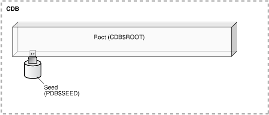
É importante lembrar que um índice só será utilizado pelo Otimizador de Query do Oracle quando ele verifica que é mais rápido fazer um Index Scan (IS) do que realizar um Full Table Scan (FTS). Em geral, índices B-Tree são utilizados quando uma consulta retorna até 4% dos dados de uma tabela, enquanto índices Bitmap serão utilizados, de forma mais eficiente, quando aplicado em colunas com baixa cardinalidade e as consultas retornam muitos dados.
A utilização de índices é fortemente recomendada, desde que aconteça com cautela e atendendo aos requisitos acima mencionados, uma vez que podem gerar um alto custo de processamento (e consequentemente de tempo) para atualizações, além disso de gerarem locks, deadlocks e um alto tempo de espera nas transações (INSERT, UPDATE ou DELETE) que envolvem as tabelas indexadas.
LOB Datatypes
Os datatypes BLOB, CLOB, NCLOB e BFILE permitem armazenar grandes blocos de dados não-estruturados (como texto, imagens de gráfico, clipes de vídeo, sons etc.) de até 4 gigabytes de tamanho. Esses tipos provêm acesso eficiente e distribuído aos dados.
A seguir são apresentadas algumas caraterísticas desses tipos de dados.
-
Uma tabela pode conter múltiplas colunas de LOB;
-
Uma tabela que contém uma ou mais colunas de LOB podem ser particionadas;
-
O tamanho máximo de um LOB é 4 gigabytes;
-
Os LOBs suportam acesso randômico aos dados;
-
Os LOBs (exceto o NCLOB) podem ser atributos a um objeto definido pelo usuário.
-
LOBs temporários podem se comportar como variáveis locais e executar transformações em dados de LOB.
-
LOBs podem ser armazenados de forma inline (dentro de uma tabela), out-of-line (dentro de um tablespace, utilizando um LOB locator), ou em um arquivo externo (BFILE datatypes).
JSON x XML
O JSON é um formato leve de intercâmbio de dados que é relativamente fácil de ler e escrever, além de ser fácil para os softwares analisarem e gerarem o código.
O XML é um formato de documentos com dados organizados hierarquicamente.
Comparando JSON e XML
- A seguir são apresentados exemplos de valores dos tipos JSON e XML.
- JSON:
{
"Nome": "Luiz Eduardo",
"SobreNome": "Barbosa",
"Certificacoes": [ "OCA", "OCP", "OCE", "OCS", "OCM" ]
}
- XML
<Pessoa>
<Nome>Luiz Eduardo</Nome>
<SobreNome>Barbosa</SobreNome>
<Certificacoes>
<Certificacao>OCA</Certificacao>
<Certificacao>OCP</Certificacao>
<Certificacao>OCE</Certificacao>
<Certificacao>OCS</Certificacao>
<Certificacao>OCM</Certificacao>
</Certificacoes>
</Pessoa>
- Criando uma tabela com JSON
CREATE TABLE "ART"."ARTTB010_TESTE_JSON_XML" (
"NU_CLIENTE" NUMBER(18,0) NOT NULL ENABLE,
"JSON_CLIENTE\" VARCHAR2(300) NOT NULL ENABLE,
"VARCH_CLIENTE" VARCHAR2(300) NOT NULL ENABLE,
"XML_CLIENTE" "XMLTYPE" NOT NULL ENABLE,**
"DT_TRANSACAO" DATE NOT NULL ENABLE,
CONSTRAINT "PK_ARTTB010" PRIMARY KEY ("NU_CLIENTE")
CONSTRAINT "CC_ARTTB010_JSON" CHECK (JSON_CLIENTE IS JSON) ENABLE
)
Foram inseridas aproximadamente 200 milhões de linhas na tabela ART.ARTTB010_TESTE_JSON_XML.
SELECT count (*) FROM ART.ARTTB010_TESTE_JSON_XML;
| COUNT(*) |
|---|
| 232.540.008 |
- Consulta à tabela usando o campo JSON SEM índice associado:
SELECT NU_CLIENTE FROM ART.ARTTB010_TESTE_JSON_XML atjx
WHERE json_value(JSON_CLIENTE, \'\$.cpf\') = \'000033857265493\';
Retorno em 21.098s.
- Consulta à tabela usando o campo VARCHAR SEM índice associado:
SELECT NU_CLIENTE FROM ART.ARTTB010_TESTE_JSON_XML atjx
WHERE VARCH_CLIENTE LIKE \'%000033857265493%\';
Retorno em 23.125s.
- Consulta à tabela usando o campo JSON COM índice associado:
SELECT NU_CLIENTE FROM ART.ARTTB010_TESTE_JSON_XML atjx
WHERE json_value(JSON_CLIENTE, \'\$.cpf\') = \'000033857265493\';
Retorno em 7.783s.
- Consulta à tabela usando o campo VARCHAR COM índice associado:
SELECT NU_CLIENTE FROM ART.ARTTB010_TESTE_JSON_XML atjx
WHERE VARCH_CLIENTE LIKE \'%000033857265493%\';
Retorno em 8.885s.
- Resultado
Diante dos resultados obtidos, percebe-se um ganho em torno de 15% de performance em campos JSON em comparação aos campos VARCHAR, no caso de dados bem estruturados.
Views
As views são visões lógicas de tabelas, cujos resultados não são armazenados em nenhuma estrutura do banco de dados. Apenas o comando SQL utilizado para criar a view é armazenado e quando ela é consultada, o banco de dados executa esse comando, retornando os dados atualizados.
O custo de execução do comando e retorno dos dados pode ser um problema e apresentar um desempenho ruim se o comando referenciar muitas tabelas e não houver colunas indexadas.
A utilização de views é fortemente recomendada quando se deseja obter conjuntos de dados atualizados e que acessam poucas tabelas e, de preferência, indexadas, ou ainda, quando se deseja abstrair dos usuários a complexidade para obter um determinado conjunto de dados.
Views Materializadas
As views materializadas (materialized views) são semelhantes às views, pois também são uma visão lógica dos dados de tabela(s), retornados a partir de um comando SQL, no entanto, o conjunto de resultados é armazenado em uma tabela. Com isto, quando uma view materializada é consultada, na verdade, uma tabela está sendo consultada e, portanto, pode ser indexada e particionada, tal como uma tabela do banco de dados.
Diferentemente das views, os dados retornados de uma view materializada só estarão atualizados se a view materializada for atualizada, uma vez que, quando consultada o banco de dados não executa o comando SQL que a criou, mas busca os dados resultantes da última consulta que estão armazenados na tabela correspondente à view materializada.
Para resolver este problema, as views materializadas podem ser atualizadas manualmente, a partir de um agendamento definido ou com base no banco de dados, que detecta uma alteração nos dados de uma das tabelas referenciadas no comando SQL de criação da view materializada. Também podem ser atualizadas de forma incremental a partir de logs, que atuam como fontes de captura de dados alterados nas tabelas referenciadas no comando SQL de criação das views materializadas.
As views materializadas são frequentemente usadas em ambientes de data warehousing/business intelligence, onde são realizadas consultas em grandes tabelas de fatos, com milhares de milhões de linhas, com um tempo de resposta considerável e onde não se precisa necessariamente de um dado real-time.
A utilização de views materializadas é fortemente recomendada quando se deseja obter grandes conjuntos de dados não necessariamente real-time, quando se deseja abstrair dos usuários a complexidade para obter um determinado conjunto de dados, ou ainda, quando se precisa realizar agregações e/ou consolidações sobre conjuntos de dados e deixá-las disponíveis para análises e consultas.
Melhores práticas
Conexão às bases de dados Oracle
As conexões às bases de dados Oracle devem ser realizadas, sempre que possível, através de datasource implementado no servidor de aplicação.
Exemplo:
\<subsystem xmlns=\"urn:jboss:domain:datasources:1.2\">
\<datasources>
\<datasource jta=\"true\" jndi-name=\"java:/jdbc/OracleSicduIntranetDS\" pool-name=\"jdbc/OracleSicduIntranetDS\" enabled=\"true\" use-ccm=\"false\">
\<connection-url>jdbc:oracle:thin:@cnpexdadvm01-scan4.extra.caixa.gov.br:1521/orad01ng\</connection-url>
\<driver-class>oracle.jdbc.OracleDriver\</driver-class>
\<driver>ojdbc6.jar\</driver>
\<security>
\<user-name>scdubd01\</user-name>
\<password>xxxxxxxxx\</password>
\</security>
\<validation>
\<validate-on-match>false\</validate-on-match>
\<background-validation>false\</background-validation>
\</validation>
\<statement>
\<share-prepared-statements>false\</share-prepared-statements>
\</statement>
\</datasource>
\</datasources>
\</subsystem>
Conexões diretas devem ser realizadas sempre ao scan (balanceador do Oracle RAC), de forma a evitar acesso direto a determinado IP.
Certo:
jdbc:oracle:thin:@cnpexdadvm01-scan4.extra.caixa.gov.br:1521/orad01ng
Errado:
jdbc:oracle:thin:@10.116.101.16:1521/orad01ng
Arquivo TNSNAMES.ora
O tnsnames.ora é um arquivo de configuração que contém net services names, que são apelidos com apontamentos para os listeners do Oracle.
Por padrão, o arquivo tnsnames.ora está localizado no diretório ORACLE_HOME/network/admin. O Oracle Net irá verificar em outros diretórios pelo arquivo tnsnames.ora, na seguinte ordem:
-
O diretório é especificado na variável de ambiente TNS_ADMIN. Se o arquivo não existir no diretório especificado, assume-se que o arquivo não exista.
-
O Oracle Net verifica o diretório ORACLE_HOME/network/admin.
Exemplo 1 -- Formato básico do arquivo tnsnames.ora:
net_service_name=
(DESCRIPTION=
(ADDRESS=(protocol_address_information))
(CONNECT_DATA=
(SERVICE_NAME=service_name)))
Exemplo 2 -- Instância orad01ng
ORAD01NG =
(DESCRIPTION =
(ADDRESS_LIST =
(ADDRESS =
(PROTOCOL = TCP)(HOST = cnpexdadvm01clu04.extra.caixa.gov.br)(PORT = 1521))
)
(CONNECT_DATA =
(SERVICE_NAME = orad01ng)
)
)
Compressão de dados
A compressão do Oracle provê uma melhora no armazenamento dos dados, de forma a melhorar a performance enquanto reduz custos de armazenamento.
A compressão de tabelas no Oracle surgiu na versão 9i, aplicando-se inicialmente em operações de carga direta, em nível de blocos. Este primeiro recurso de compressão de tabelas é denominado Basic Table Compression. Na versão 11g, a Oracle criou um recurso para permitir a compactação de dados também durante os DMLs convencionais, denominado OLTP Table Compression e agora chamado de Advanced Row compression (11gR2 e versões superiores).
Basic Table Compression
-
Atua somente em cargas diretas (insert com hint append ou sql loader), comandos ALTER TABLE MOVE e CTAS;
-
É totalmente gratuito;
-
Comprime os dados em até 10x;
-
Ótimo para ambientes OLAP ou tabelas de histórico de dados;
-
Sintaxe para uso: COMPRESS
Exemplo:
create table ART.ARTTB011_COMPRESS_BASICO
compress basic
as select owner,object_name FROM all_objects
where rownum = 0;
Advanced Row Compression
-
Possui menos restrições que o recurso anterior, atuando também diretamente nos comandos DML;
-
Comprime de 2x a 4x os dados das operações DML;
Exemplo:
create table ART.ARTTB012_COMPRESS_ADVANCED
ROW STORE COMPRESS ADVANCED
as select owner,object_name FROM all_objects
where rownum = 0;
Uma vantagem significativa é a habilidade do Oracle de ler blocos comprimidos (dados e índices) diretamente, em memória, sem descomprimir os blocos. Isso melhora o desempenho pela redução de I/O. Além disso, o buffer cache se torna mais eficiente, pois armazena mais dados sem memória adicional.
Como migrar para Advanced Row Compression
Para novas tabelas e partições, habilitar o Advanced Row Compression é simples. Conforme exemplo acima, é necessário acrescentar a cláusula "ROW STORE COMPRESS ADVANCED".
Para tabelas e partições existentes, existem várias maneiras para habilitar o Advanced Row Compression:
- ALTER TABLE ... ROW STORE COMPRESS ADVANCED
Esse método habilita o recurso para futuros comandos DML. Contudo, os dados existentes continuam descomprimidos.
- Redefinição Online (DBMS_REDEFINITION)
Esse método habilita a compressão tanto para dados já existentes quanto para futuros comandos DML.
Executar o DBMS_REDEFINITION mantém a tabela disponível tanto para leitura quanto para escrita.
- ALTER TABLE ... MOVE ROW STORE COMPRESS ADVANCED
Esse método habilita a compressão tanto para dados já existentes quanto para futuros comandos DML.
Enquanto a tabela está sendo movida, fica disponível para leitura. Contudo, os comandos DML ficam bloqueados até o comando de move terminar.
Além disso, o comando de move invalida todas os índices na tabela.
- ALTER TABLE ... MOVE TABLE/PARTITION/SUBPARTITION ... ONLINE ROW STORE COMPRESS ADVANCED
Esse método habilita a compressão tanto para dados já existentes quanto para futuros comandos DML.
O comando ALTER TABLE ... MOVE TABLE/PARTITION/SUBPARTITION ... ONLINE permite que os comandos DML continuem executando sem interrupção.
Os índices permanecem ativos durante o comando de move. Dessa forma, não é necessário realizar rebuild dos índices após a operação de move.
Adicionalmente, são recomendados:
-
Mesmo que o overhead de CPU seja mínimo, é ideal que o ambiente possua ciclos de CPU disponíveis, uma vez que o overhead pode existir.
-
O Compression Advisor é um pacote PL/SQL que é utilizado para estimar os ganhos com o Advanced Row Compression, baseado em análise de amostras de dados.
-
O Advanced Row Compression não é suportado em tabelas que tenham colunas com o datatype LONG.
-
Blocos grandes não asseguram compressões melhores dos dados.
-
A recomendação é que LOBs acima de 4K devem ser administrados utilizando SecureFiles.
-
A compressão do utilitário Data Pump é independente do Advanced Row Compression. O arquivo do Data Pump é descomprimido de forma online durante o processo de import, e os dados são distribuídos, dependendo do critério de compressão da tabela.
-
Tabelas organizadas por índice (IOT\'s) não podem ser comprimidas utilizando Advanced Row ou Basic Compression. As IOTs podem ser comprimidas através de Prefix Compression.
Particionamento
O Oracle Partitioning é uma das funcionalidades mais importantes do banco de dados Oracle, ao permitir a modelagem de objetos a partir de vários critérios, tais como, cenários negociais, janelas de disponibilização de dados, ciclo de vida do dado, dentre outros.
Conceito
O particionamento permite que uma tabela, índice ou tabela organizada por índices, seja subdividida em partes menores, onde cada parte do objeto do banco de dados chama-se partição, individualmente nomeada, e pode, opcionalmente, ter suas próprias características de armazenamento.
Isto permite uma flexibilidade enorme para administração do banco de dados, uma vez que cada partição pode ser administrada de forma coletiva ou individual, utilizar diferentes camadas de armazenamento, aplicar compressão de dados ou armazenar separadamente dados mais antigos em unidades somente leitura, além de ser transparente para as aplicações, não sendo necessárias quaisquer modificações na forma de acesso aos objetos particionados.
O particionamento pode ser aplicado a tabelas, índices e tabelas organizadas por índices, a partir de uma "chave de particionamento", que irá determinar a partição em que um registro de uma tabela será armazenado. Independentemente da estratégia escolhida de particionamento de um índice, ele é acoplado ou não à estratégia subjacente de particionamento da tabela subjacente.
O Oracle 11g diferencia entre três tipos de índices particionados.
-
Índices Locais: um índice local é um índice em uma tabela particionada que é acoplada a uma tabela particionada subjacente, \'herdando\' a estratégia de particionamento da tabela. Com isso, cada partição de um índice local corresponde a uma, e somente uma, partição da tabela subjacente. Esse acoplamento permite uma manutenção otimizada da partição, pois quando uma partição da tabela é eliminada, só é necessário eliminar o índice correspondente à partição. Esses índices são mais comuns em ambientes de data warehousing.
-
Índices Particionados Globais: um índice particionado global é um índice em uma tabela, particionada ou não, que é particionado utilizando uma chave ou estratégia de particionamento diferente da tabela, estando, portanto, desacoplados da tabela subjacente. Esses índices são mais comuns em ambientes de OLTP.
-
Índices Não particionados Globais: um índice não particionado global é igual a um índice em uma tabela não particionada, sendo, portanto, desacoplado da tabela subjacente. Em ambientes de data warehousing, o uso mais comum de índices não particionados globais é para reforçar as restrições de chave primária e, ambientes de OLTP dependem principalmente de índices não particionados globais.
Benefícios do particionamento
O particionamento pode trazer enormes benefícios para um grande leque de aplicações, melhorando o desempenho, administração e disponibilidade da base de dados.
-
Reduzindo a quantidade de dados a serem lidos, o particionamento propicia um enorme ganho de performance.
-
Melhorando a disponibilidade devido à administração individual das partições.
-
Diminuindo custos, armazenando os dados de maneira apropriada.
-
Facilitando a implementação, não sendo necessárias alterações em aplicações ou queries.
Além disso, o Oracle possui o partition-wise join. Essa técnica pode ser aplicada quando está sendo realizada um join entre duas tabelas e ambas são particionadas pelo atributo join, ou quando uma tabela particionada por referência faz join com sua tabela pai. O partition-wise join quebra o join em vários joins menores entre as partições. Esse recurso melhora a performance tanto para execuções em paralelo quanto sequenciais.
Desempenho
O particionamento proporciona diversos benefícios de desempenho, ao reduzir a quantidade de dados a serem acessados e/ou manipulados, a saber:
-
Compactação do Particionamento: a compactação do particionamento (também chamada de eliminação da partição) é a forma mais simples de aumentar o desempenho utilizando o particionamento, pois é, apenas as partições contendo os dados solicitados são acessadas.
-
Junções por Partição: a técnica chamada de junções por partição pode ser aplicada quando duas tabelas são unidas e, ao menos uma dessas tabelas é particionada na chave de junção. As junções por partição dividem uma junção maior em junções menores dos mesmos conjuntos de valores de chave de particionamento nos dois lados da junção para as tabelas unidas, garantindo que somente uma junção desses conjuntos de dados produzirá um resultado e os demais conjuntos de dados não deverão ser considerados. O Oracle utiliza tabelas (físicas) já igualmente particionadas para a junção ou redistribui as partições de uma tabela de forma transparente durante a execução, para criar conjuntos de dados igualmente particionados correspondentes ao particionamento da outra tabela, completando toda a junção em menos tempo. Isso oferece benefícios significativos de desempenho tanto na execução em série como paralela.
Administração
Ao distribuir conjuntos de dados de tabelas e índices em unidades menores, o particionamento facilita o gerenciamento do banco de dados, uma vez que as operações de manutenção podem concentrar-se em determinadas partes das tabelas e índices, como por exemplo, comprimir uma única partição contendo um determinado conjunto de dados, em vez de comprimir toda a tabela. Em ambientes de data warehouse, o particionamento para gerenciamento é realizado para suportar processos de carga em \'janela contínua\', onde cada carga representaria uma nova partição, o que é muito mais eficiente que modificar toda a tabela. Assim como, quando for necessário remover dados organizados em partições, será muito mais rápido e eficiente remover partições individualmente, em comparação a excluir pelo critério de linha.
Disponibilidade
O particionamento permite uma característica de independência entre as partições, o que pode ser bastante útil em uma estratégia de alta disponibilidade, já que uma partição de uma tabela particionada pode não estar disponível e as demais partições da tabela permanecerem on-line e disponíveis. E, isto é transparente para as aplicações, que podem continuar a executar consultas e transações sobre os dados armazenados nas partições disponíveis da tabela particionada. Essa característica é bastante útil, pois permite a realização de operações de backup e recuperação em cada partição individualmente, independentemente das demais partições na tabela, por exemplo, o que pode diminuir significativamente o tempo de inatividade de um sistema em decorrência de operações de administração.
Métodos de particionamento
Os métodos de particionamento de tabelas são apresentados a seguir:
-
Particionamento por range;
-
Particionamento por lista (list);
-
Particionamento por hash;
-
Particionamento composto (composite);
-
Particionamento por intervalo (interval);
-
Particionamento por referência (by reference);
-
Particionamento por colunas virtuais.
A figura a seguir apresentada os métodos de particionamento de tabelas.
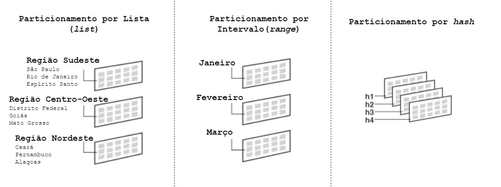
Particionamento por faixas (range)
Os dados são divididos nas partições baseados nos range (intervalos) definidos. É o tipo mais comum de particionamento e normalmente é usado com datas.
O particionamento por range possui as seguintes regras:
-
Cada partição possui a cláusula "VALUES LESS THAN", que especifica o limite superior para as partições. Quaisquer valores iguais ou maiores que o definido como limite são adicionados na próxima partição.
- A opção MAXVALUE pode ser definida para a maior partição. Essa opção representa um valor maior que qualquer outra partição, incluindo o valor nulo.
Exemplo:
CREATE TABLE ART.ARTTB001_EQUIPE_SUART
(NU_SUART NUMBER NOT NULL,
NU_TIPO_SUART NUMBER(3,0) NOT NULL ENABLE,
CO_EQUIPE_SUART VARCHAR2(32) NOT NULL ENABLE,
DE_EQUIPE_SUART VARCHAR2(50) NOT NULL ENABLE,
IC_EQUIPE_SUART char(1) NOT NULL,
DT_CADASTRAMENTO DATE NOT NULL
)
PARTITION BY RANGE (DT_CADASTRAMENTO)
(PARTITION JANEIRO_2022 VALUES LESS THAN
(TO_DATE(\'01-FEB-2022\', \'DD-MON-YYYY\')),
PARTITION FEVEREIRO_2022 VALUES LESS THAN
(TO_DATE(\'01-MAR-2022\', \'DD-MON-YYYY\')),
PARTITION MARCO_2022 VALUES LESS THAN
(TO_DATE(\'01-APR-2022\', \'DD-MON-YYYY\')),
PARTITION ABRIL_2022 VALUES LESS THAN
(TO_DATE(\'01-MAY-2022\', \'DD-MON-YYYY\')),
PARTITION MAIO_2022 VALUES LESS THAN
(TO_DATE(\'01-JUN-2022\', \'DD-MON-YYYY\')),
PARTITION JUNHO_2022 VALUES LESS THAN
(TO_DATE(\'01-JUL-2022\', \'DD-MON-YYYY\')),
PARTITION JULHO_2022 VALUES LESS THAN
(TO_DATE(\'01-AUG-2022\', \'DD-MON-YYYY\')),
PARTITION AGOSTO_2022 VALUES LESS THAN
(TO_DATE(\'01-SEP-2022\', \'DD-MON-YYYY\')),
PARTITION SETEMBRO_2022 VALUES LESS THAN
(TO_DATE(\'01-OCT-2022\', \'DD-MON-YYYY\')),
PARTITION OUTUBRO_2022 VALUES LESS THAN
(TO_DATE(\'01-NOV-2022\', \'DD-MON-YYYY\')),
PARTITION NOVEMBRO_2022 VALUES LESS THAN
(TO_DATE(\'01-DEC-2022\', \'DD-MON-YYYY\')),
PARTITION DEZEMBRO_2022 VALUES LESS THAN
(TO_DATE(\'01-JAN-2023\', \'DD-MON-YYYY\')))
TABLESPACE ARTTSDT000;
Particionamento por lista (list)
O particionamento por lista permite o controle explícito de como os registros serão distribuídos na partição. Isso é feito através de uma lista de valores na definição de cada partição. A vantagem desse método é a possibilidade de agrupar e organizar registros que não possuam relação pré-determinada.
Exemplo:
CREATE TABLE ART.ARTTB002_UNIDADE_FEDERECAO
(NU_UNIDADE_FEDERACAO INTEGER NOT NULL,
NO_UNIDADE_FEDERACAO VARCHAR2(50) NOT NULL,
NO_ESTADO_FEDERACAO VARCHAR2(50) NOT NULL
)
PARTITION BY LIST (NO_ESTADO_FEDERACAO)
(PARTITION NORTE VALUES (\'Amazonas\',\'Roraima\',\'Amapá\',\'Pará\',\'Tocantins\',\'Rondônia\',\'Acre\'),
PARTITION SUDESTE VALUES (\'São Paulo\',\'Rio de Janeiro\',\'Espírito Santo\',\'Minas Gerais\'),
PARTITION NORDESTE VALUES (\'Maranhão\',\'Piauí\',\'Ceará\',\'Rio Grande do Norte\',\'Pernambuco\',\'Paraíba\',\'Sergipe\',\'Alagoas\',\'Bahia\'),
PARTITION CENTRO_OESTE VALUES (\'Goiás\',\'Mato Grosso\',\'Mato Grosso do Sul\',\'Distrito Federal\'),
PARTITION SUL VALUES (\'Rio Grande do Sul\',\'Paraná\',\'Santa Catarina\'))
TABLESPACE ARTTSDT000;
Particionamento por hash
O Oracle aplica um algoritmo interno ao atributo de particionamento, de forma a definir a partição a ser utilizada. É de fácil e simples implementação. É uma melhor alternativa quando:
-
Você não sabe quantos registros estarão distribuídos nas partições;
-
O tamanho da partição será substancialmente diferente ou difícil de balancear;
-
Particionamento por range causaria uma distribuição dos registros de forma indesejável.
Os conceitos de dividir, dropar e realizar merge de partições não se aplicam ao método por hash.
Exemplo:
CREATE TABLE ART.ARTTB003_FUNCIONARIO
(NU_MATRICULA INTEGER NOT NULL,
NO_FUNCIONARIO VARCHAR2(200) NOT NULL,
CO_ESTADO_CIVIL VARCHAR2(20) NOT NULL
)
PARTITION BY HASH (NU_MATRICULA)
(PARTITION p1 TABLESPACE ARTTSDT001,
PARTITION p2 TABLESPACE ARTTSDT002,
PARTITION p3 TABLESPACE ARTTSDT003,
PARTITION p4 TABLESPACE ARTTSDT004)
Particionamento composto (composite)
Esse tipo combina dois métodos de particionamento.
O particionamento composto suporta operações históricas, como adicionar novas partições, mas também provê um alto grau de paralelismo para operações DML e maior granularidade, devido à divisão dos dados em subpartições.
Exemplo de particionamento composto Range-Hash:
CREATE TABLE ART.ARTTB004_VENDA_COMPOSITE
(CO_VENDEDOR NUMBER(5) NOT null,
NO_VENDEDOR VARCHAR2(30) NOT null,
QT_VENDA NUMBER(10) NOT NULL ,
DT_VENDA DATE NOT null)
PARTITION BY RANGE(DT_VENDA)
SUBPARTITION BY HASH(CO_VENDEDOR)
SUBPARTITIONS 4 STORE IN
(ARTTSDT001, ARTTSDT002, ARTTSDT003, ARTTSDT004)
(PARTITION VENDAS_jan2022 VALUES LESS THAN(TO_DATE(\'01/02/2022\',\'DD/MM/YYYY\')),
PARTITION VENDAS_fev2022 VALUES LESS THAN(TO_DATE(\'01/03/2022\',\'DD/MM/YYYY\')),
PARTITION VENDAS_mar2022 VALUES LESS THAN(TO_DATE(\'01/04/2022\',\'DD/MM/YYYY\')),
PARTITION VENDAS_abr2022 VALUES LESS THAN(TO_DATE(\'01/05/2022\',\'DD/MM/YYYY\')),
PARTITION VENDAS_mai2022 VALUES LESS THAN(TO_DATE(\'01/06/2022\',\'DD/MM/YYYY\')));
Exemplo de particionamento composto Range-List:
CREATE TABLE ART.ARTTB005_VENDA_REGIAO
(CO_VENDEDOR NUMBER(5) NOT null,
NO_VENDEDOR VARCHAR2(30) NOT null,
QT_VENDA NUMBER(10) NOT NULL ,
DT_VENDA DATE NOT NULL,
NO_ESTADO_VENDA VARCHAR2(50) NOT NULL)
TABLESPACE ARTTSDT000
PARTITION BY RANGE(DT_VENDA)
SUBPARTITION BY LIST (NO_ESTADO_VENDA)
(PARTITION VENDAS_jan2022 VALUES LESS THAN(TO_DATE(\'01/02/2022\',\'DD/MM/YYYY\'))
(SUBPARTITION VENDAS_jan2022_NORTE VALUES (\'Amazonas\',\'Roraima\',\'Amapá\',\'Pará\',\'Tocantins\',\'Rondônia\',\'Acre\'),
SUBPARTITION VENDAS_jan2022_SUDESTE VALUES (\'São Paulo\',\'Rio de Janeiro\',\'Espírito Santo\',\'Minas Gerais\'),
SUBPARTITION VENDAS_jan2022_NORDESTE VALUES (\'Maranhão\',\'Piauí\',\'Ceará\',\'Rio Grande do Norte\',\'Pernambuco\',\'Paraíba\',\'Sergipe\',\'Alagoas\',\'Bahia\'),
SUBPARTITION VENDAS_jan2022_CENTRO_OESTE VALUES (\'Goiás\',\'Mato Grosso\',\'Mato Grosso do Sul\',\'Distrito Federal\'),
SUBPARTITION VENDAS_jan2022_SUL VALUES (\'Rio Grande do Sul\',\'Paraná\',\'Santa Catarina\')),
PARTITION VENDAS_fev2022 VALUES LESS THAN(TO_DATE(\'01/03/2022\',\'DD/MM/YYYY\'))
(SUBPARTITION VENDAS_fev2022_NORTE VALUES (\'Amazonas\',\'Roraima\',\'Amapá\',\'Pará\',\'Tocantins\',\'Rondônia\',\'Acre\'),
SUBPARTITION VENDAS_fev2022_SUDESTE VALUES (\'São Paulo\',\'Rio de Janeiro\',\'Espírito Santo\',\'Minas Gerais\'),
SUBPARTITION VENDAS_fev2022_NORDESTE VALUES (\'Maranhão\',\'Piauí\',\'Ceará\',\'Rio Grande do Norte\',\'Pernambuco\',\'Paraíba\',\'Sergipe\',\'Alagoas\',\'Bahia\'),
SUBPARTITION VENDAS_fev2022_CENTRO_OESTE VALUES (\'Goiás\',\'Mato Grosso\',\'Mato Grosso do Sul\',\'Distrito Federal\'),
SUBPARTITION VENDAS_fev2022_SUL VALUES (\'Rio Grande do Sul\',\'Paraná\',\'Santa Catarina\')),
PARTITION VENDAS_mar2022 VALUES LESS THAN(TO_DATE(\'01/04/2022\',\'DD/MM/YYYY\'))
(SUBPARTITION VENDAS_mar2022_NORTE VALUES (\'Amazonas\',\'Roraima\',\'Amapá\',\'Pará\',\'Tocantins\',\'Rondônia\',\'Acre\'),
SUBPARTITION VENDAS_mar2022_SUDESTE VALUES (\'São Paulo\',\'Rio de Janeiro\',\'Espírito Santo\',\'Minas Gerais\'),
SUBPARTITION VENDAS_mar2022_NORDESTE VALUES (\'Maranhão\',\'Piauí\',\'Ceará\',\'Rio Grande do Norte\',\'Pernambuco\',\'Paraíba\',\'Sergipe\',\'Alagoas\',\'Bahia\'),
SUBPARTITION VENDAS_mar2022_CENTRO_OESTE VALUES (\'Goiás\',\'Mato Grosso\',\'Mato Grosso do Sul\',\'Distrito Federal\'),
SUBPARTITION VENDAS_mar2022_SUL VALUES (\'Rio Grande do Sul\',\'Paraná\',\'Santa Catarina\')),
PARTITION VENDAS_abr2022 VALUES LESS THAN(TO_DATE(\'01/05/2022\',\'DD/MM/YYYY\'))
(SUBPARTITION VENDAS_abr2022_NORTE VALUES (\'Amazonas\',\'Roraima\',\'Amapá\',\'Pará\',\'Tocantins\',\'Rondônia\',\'Acre\'),
SUBPARTITION VENDAS_abr2022_SUDESTE VALUES (\'São Paulo\',\'Rio de Janeiro\',\'Espírito Santo\',\'Minas Gerais\'),
SUBPARTITION VENDAS_abr2022_NORDESTE VALUES (\'Maranhão\',\'Piauí\',\'Ceará\',\'Rio Grande do Norte\',\'Pernambuco\',\'Paraíba\',\'Sergipe\',\'Alagoas\',\'Bahia\'),
SUBPARTITION VENDAS_abr2022_CENTRO_OESTE VALUES (\'Goiás\',\'Mato Grosso\',\'Mato Grosso do Sul\',\'Distrito Federal\'),
SUBPARTITION VENDAS_abr2022_SUL VALUES (\'Rio Grande do Sul\',\'Paraná\',\'Santa Catarina\')),
PARTITION VENDAS_mai2022 VALUES LESS THAN(TO_DATE(\'01/06/2022\',\'DD/MM/YYYY\'))
(SUBPARTITION VENDAS_mai2022_NORTE VALUES (\'Amazonas\',\'Roraima\',\'Amapá\',\'Pará\',\'Tocantins\',\'Rondônia\',\'Acre\'),
SUBPARTITION VENDAS_mai2022_SUDESTE VALUES (\'São Paulo\',\'Rio de Janeiro\',\'Espírito Santo\',\'Minas Gerais\'),
SUBPARTITION VENDAS_mai2022_NORDESTE VALUES (\'Maranhão\',\'Piauí\',\'Ceará\',\'Rio Grande do Norte\',\'Pernambuco\',\'Paraíba\',\'Sergipe\',\'Alagoas\',\'Bahia\'),
SUBPARTITION VENDAS_mai2022_CENTRO_OESTE VALUES (\'Goiás\',\'Mato Grosso\',\'Mato Grosso do Sul\',\'Distrito Federal\'),
SUBPARTITION VENDAS_mai2022_SUL VALUES (\'Rio Grande do Sul\',\'Paraná\',\'Santa Catarina\'))) ;
Particionamento por intervalo (interval)
O particionamento por interval é uma extensão do método de range, mas com a capacidade de criar partições automaticamente à medida que os dados inseridos excedam o limite de todas as partições existentes. O valor do atributo de particionamento define o limite da partição, chamado de ponto de transição.
Exemplo:
CREATE TABLE ART.ARTTB006_EQUIPE_SUART
(NU_SUART NUMBER NOT NULL,
NU_TIPO_SUART NUMBER(3,0) NOT NULL ENABLE,
CO_EQUIPE_SUART VARCHAR2(32) NOT NULL ENABLE,
DE_EQUIPE_SUART VARCHAR2(50) NOT NULL ENABLE,
IC_EQUIPE_SUART char(1) NOT NULL,
DT_CADASTRAMENTO DATE NOT NULL
)
PARTITION BY RANGE (DT_CADASTRAMENTO)
INTERVAL(NUMTOYMINTERVAL(1, \'MONTH\'))
(PARTITION JANEIRO_2022 VALUES LESS THAN (TO_DATE(\'01-FEB-2022\', \'DD-MON-YYYY\')))
No exemplo acima, dado inseridos após janeiro serão alocados em partições novas criadas automaticamente pelo Oracle, com um intervalo de 1 mês.
Particionamento por referência (by reference)
O particionamento por referência permite o particionamento de duas tabelas que possuem relacionamento através de constraints referenciais.
O benefício desse método é a possibilidade do particionamento das duas tabelas sem duplicação dos atributos de particionamento, além de facilitar o desenvolvimento das aplicações.
Exemplo:
CREATE TABLE ART.ARTTB007_PEDIDO
( NU_PEDIDO NUMBER(12) NOT NULL,
DT_PEDIDO DATE NOT NULL,
DE_PEDIDO VARCHAR2(100),
CO_CLIENTE VARCHAR2(8) NOT NULL,
IC_STATUS_PEDIDO CHAR(2) NOT NULL,
VR_PEDIDO NUMBER(8,2) NOT NULL,
CONSTRAINT PK_ARTTB007 PRIMARY KEY(NU_PEDIDO)
)
TABLESPACE ARTTSDT001
PARTITION BY RANGE(DT_PEDIDO)
( PARTITION quadr1_2022 VALUES LESS THAN (TO_DATE(\'01-APR-2022\',\'DD-MON-YYYY\')),
PARTITION quadr2_2022 VALUES LESS THAN (TO_DATE(\'01-JUL-2022\',\'DD-MON-YYYY\')),
PARTITION quadr3_2022 VALUES LESS THAN (TO_DATE(\'01-OCT-2022\',\'DD-MON-YYYY\')),
PARTITION quadr4_2022 VALUES LESS THAN (TO_DATE(\'01-JAN-2023\',\'DD-MON-YYYY\'))
);
CREATE TABLE ART.ARTTB008_ITEM_PEDIDO
( NU_PEDIDO NUMBER(12) NOT NULL,
NU_ITEM_PEDIDO NUMBER(3) NOT NULL,
NU_PRODUTO NUMBER(6) NOT NULL,
VR_PRECO_UNITARIO NUMBER(8,2),
QT_ITEM_PRODUTO NUMBER(8),
CONSTRAINT FK_ARTTB008_ARTTB007
FOREIGN KEY(NU_PEDIDO) REFERENCES ART.ARTTB007_PEDIDO(NU_PEDIDO)
)
TABLESPACE ARTTSDT001
PARTITION BY REFERENCE(FK_ARTTB008_ARTTB007);
Particionamento por colunas virtuais (by virtual columns)
O particionamento por colunas virtuais permite definir um critério a partir de uma expressão, a qual pode usar dados de outras colunas, além da realização de cálculos. Chamadas a funções PL/SQL não são permitidas.
O particionamento por colunas virtuais suporta todos os métodos de particionamento, além de abranger todas as funcionalidades de performance e disponibilidade.
Exemplo:
CREATE TABLE ART.ARTTB009_ALUGUEL_CARRO
( NU_ALUGUEL NUMBER NOT NULL
, NU_CLIENTE NUMBER NOT NULL
, CO_CONFIRMACAO_ALUGUEL VARCHAR2(12) NOT NULL
, NU_CARRO NUMBER NOT NULL
, IC_TIPO_CARRO VARCHAR2(10) NOT NULL
, DT_INICIO_ALUGUEL DATE NOT NULL
, DT_FIM_ALUGUEL DATE NOT NULL
, PAIS as (substr(CO_CONFIRMACAO_ALUGUEL,9,2))
)
TABLESPACE ARTTSDT001
PARTITION BY LIST (PAIS)
SUBPARTITION BY HASH (NU_CLIENTE)
SUBPARTITIONS 16
( PARTITION AMERICA_NORTE VALUES (\'US\',\'CA\',\'MX\')
, PARTITION AMERICA_SUL VALUES (\'BR\',\'AR\',\'PE\')
, PARTITION EUROPA VALUES (\'GB\',\'DE\',\'NL\',\'BE\',\'FR\',\'ES\',\'IT\',\'CH\')
, PARTITION OCEANIA VALUES (\'NZ\',\'AU\',\'IN\',\'CN\')
) ENABLE ROW MOVEMENT;
Particionamento de tabela
A criação de tabelas particionadas é similar a criação de tabelas não-particionadas, mas com a inclusão da cláusula de particionamento no statement CREATE TABLE.
O particionamento é possível tanto em tabelas regulares (sem organização), quanto em tabelas organizadas por índice, com exceção de tabelas que contenham colunas com os tipos long ou long raw.
Durante a criação ou alteração de uma tabela particionada, é possível especificar a cláusula de row movement (ENABLE ROW MOVEMENT ou DISABLE ROW MOVEMENT), que possibilita a migração de um registro para uma nova partição, caso sua chave seja atualizada. O valor default é DISABLE ROW MOVEMENT.
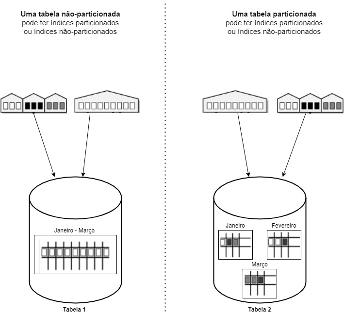
O particionamento de tabelas é fortemente recomendado nas seguintes situações:
-
Tabelas maiores que 2GB, no entanto, cada caso deve ser avaliado pela área de banco de dados responsável;
-
Tabelas que contenham dados históricos, no qual os dados novos sempre são inseridos na partição mais recentes;
-
Tabelas nas quais os dados tenham que ser distribuídos entre vários dispositivos de armazenamento, desde que não seja utilizado o Automatic Storage Management - ASM no Exadata/RAC.
Particionamento de índices
Um índice pode ser particionado, com exceção dos seguintes casos:
-
Quando o índice é cluster;
-
Quando o índice está definido em uma tabela clustered.
Uma tabela particionada pode ter índices particionados ou não-particionados.
Uma tabela não-particionada pode ter índices particionados ou não-particionados.
Particionamento local (local indexes)
Em um índice local, todas as chaves de uma partição específica referem-se somente a uma partição da tabela, ou seja, o particionamento segue o padrão definido na tabela.
Exemplo:
CREATE INDEX ART.IX_ARTTB006_1 ON
ART.ARTTB006_EQUIPE_SUART (DT_CADASTRAMENTO)
COMPRESS ADVANCED HIGH LOCAL
Particionamento global (global indexes)
Em um índice global, as chaves de uma partição podem referenciar linhas em múltiplas partições da tabela principal, não necessariamente seguindo o particionamento da tabela.
Um índice global pode ser particionado por hash ou por range.
O particionamento de índices é fortemente recomendado nas seguintes situações:
-
Para evitar manutenções nos índices, quando dados da tabela associada são removidos;
-
Para realizar manutenções em partes do índice sem invalidá-lo por completo;
-
Para reduzir o efeito de colunas com valores mal distribuídos (index skew).
Cases
Teste de aplicação de compressão EHCC na CAIXA
Segundo levantamento da CEPTISP, os módulos MTX e CCO utilizam 11,73 TB e 65,7 TB, respectivamente.
Tabela Quantidade de Linhas
MTXTB016_ITERACAO_CANAL 1.714.587.330
MTXTB017_VERSAO_SRVCO_TRNSO 1.716.173.947
MTXTB014_TRANSACAO 1.844.028.918
MTXTB015_SRVCO_TRNSO_TARFA 4.120.756.140
CCOTB004_CMPRE_SGNDA_VIA 1.345.142.350
CCOTB009_TRANSACAO_XML_13112021 4.084.908.310
CCOTB003_TRANSACAO 5.057.940.970
CCOTB018_SRVCO_TRNSO_TARFA 13.406.317.290
Considerando todos os módulos da solução PIX, os discos Exadata adquiridos pela CAIXA estão quase em seu limite de ocupação e o teste apresentado a seguir busca exemplificar o ganho que pode ser obtido com o uso da compressão.
-
Teste comparativo realizado
-
Estruturas utilizadas:
-
Tablespace SEM COMPRESS:
CREATE BIGFILE TABLESPACE \"BNNTSDT000\"
DATAFILE \'+D01NG_1/ORAD01NG/DATAFILE/bnntsdt000.dbf\' SIZE 52G LOGGING ONLINE PERMANENT BLOCKSIZE 8192
EXTENT MANAGEMENT LOCAL AUTOALLOCATE DEFAULT
NOCOMPRESS
SEGMENT SPACE MANAGEMENT AUTO;
- Tablespace COM COMPRESS:
CREATE BIGFILE TABLESPACE \"BNNTSDT001\"
DATAFILE \'+D01NG_1/ORAD01NG/DATAFILE/bnntsdt001.dbf\' SIZE 52G LOGGING ONLINE PERMANENT BLOCKSIZE 8192
EXTENT MANAGEMENT LOCAL AUTOALLOCATE DEFAULT
TABLE COMPRESS FOR ARCHIVE HIGH
SEGMENT SPACE MANAGEMENT AUTO;
- Espaço alocado:
Foram inseridas 100 milhões de linhas em ambas as tabelas e verificado o espaço utilizado.
[SEM_COMPRESS]{.underline}
SELECT BYTES/1024/1024 AS TAMANHO_SEM_COMPRESS
FROM DBA_SEGMENTS
WHERE SEGMENT_NAME = 'BNNTB002_MNSGM_PGMNO_INTNO_SEM_COMPRESS'
Resultado (TAMANHO_SEM_COMPRESS)
25,792 GB
[COM_COMPRESS]{.underline}
SELECT BYTES/1024/1024 AS TAMANHO_COM_COMPRESS
FROM DBA_SEGMENTS
WHERE SEGMENT_NAME = 'BNNTB002_MNSGM_PGMNO_INTNO'
Resultado (TAMANHO_COM_COMPRESS)
12,032 GB
Foram percebidos ganhos de 60% no espaço total alocado.
- Desempenho em tabelas com COMPRESS
Tabelas compactadas apesar de consumirem mais CPU, economizam espaço em disco e reduzem a quantidade de I/O. Isso normalmente otimiza o desempenho de instruções SELECT e DELETE.
A imagem abaixo mostra um exemplo retirado de uma apresentação da Oracle (ver referências), que mostra o mesmo SQL em tabelas similares (com estruturas idênticas, porém uma compactada e a outra não) e o tempo de execução em cada uma delas.
O tempo de CPU na tabela compactada é maior, porém o tempo de I/O é muito menor. No final das contas, o desempenho geral ficou 264% mais performático.
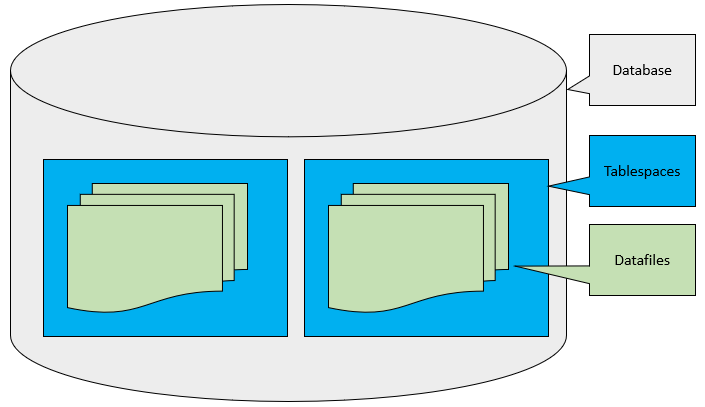
- Teste de leitura no ambiente CAIXA:
[SEM COMPRESS]{.underline}
select *
FROM BNN.BNNTB002_MNSGM_PGMNO_INTNO_SEM_COMPRESS
WHERE rownum \<= 200
ORDER BY NU_MENSAGEM_PGMNO_INTTO ASC;
Resultado (TEMPO_SEM_COMPRESS)
879ms
[COM COMPRESS]{.underline}
select *
FROM BNN.BNNTB002_MNSGM_PGMNO_INTNO
WHERE rownum \<= 200
ORDER BY NU_MENSAGEM_PGMNO_INTTO ASC;
Resultado (TEMPO_COM_COMPRESS)
826ms
Percebeu-se um ganho no tempo de resposta da tabela com compressão.
Referências
|
[1] |
ORACLE. Introduction to Oracle Solaris 11.1
Virtualization Environments. Oracle Solaris Zones Overview, 2012. Disponível em:
<http://web.archive.org/web/20210228133446/https://docs.oracle.com/cd/E26502_01/html/E29023/zonesoverview.html>.
Acesso em: 02 ago. 2022. |
|
[2] |
WIKIMEDIA FOUNDATION, I. E. A. Disaster Recovery. Disaster Recovery, 2022. Disponível em: <http://web.archive.org/web/20220602234439/https://en.wikipedia.org/wiki/Disaster_recovery>.
Acesso em: 24 ago. 2022. |
|
[3] |
WIKIMEDIA FOUNDATION, I. E. A. APPLIANCE. Appliance, 14 fev. 2022. Disponível em:
<https://web.archive.org/web/20220507225205/https://en.wikipedia.org/wiki/Appliance>.
Acesso em: 12 jul. 2022. |
|
[4] |
ORACLE. Oracle Multitenant. Oracle Multitenant,
2022. Disponível em:
<https://www.oracle.com/br/database/multitenant/>. Acesso em: 24 ago.
2022. |
|
[5] |
ORACLE.
Oracle Exadata. Exadata, 2022. Disponível em:
<https://www.oracle.com/br/engineered-systems/exadata/>. Acesso em:
24 ago. 2022. |
|
[6] |
ORACLE. Exadata Smart Flash Cache. Flash Cache Oracle Exadata, 2022. Disponível em: <https://www.oracle.com/us/solutions/exadata-smart-flash-cache-366203.pdf>.
Acesso em: 04 ago. 2022. |
|
[7] |
ORACLE.
Oracle Exadata Database Machine: Exadata Hybrid Columnar Compression
(EHCC). Oracle Exadata Hybrid Columnar Compression, 2022. Disponível
em:
<https://www.oracle.com/br/technical-resources/articles/oem/oracle-hybrid-columnar-compression.html>.
Acesso em: 24 ago. 2022. |
|
[8] |
ORACLE. Technical Overview of the Exadata Storage Server.
Exadata Storage Server, 2022. Disponível em:
<https://www.oracle.com/technetwork/pt/database/exadata/visao-geral-exadata-storage-server-1721608-ptb.pdf>.
Acesso em: 24 ago. 2022. |
|
[9] |
WIKIMEDIA FOUNDATION, I. E. A. Oracle Zero Data Loss
Recovery Appliance. ZDLRA, 14 abr. 2022. Disponível em:
<https://web.archive.org/web/20220711201546/https://en.wikipedia.org/wiki/Oracle_Zero_Data_Loss_Recovery_Appliance>.
Acesso em: 11 jul. 2022. |
|
[10] |
ORACLE.
Active Data Guard. Oracle ADG, 2022. Disponível em:
<https://www.oracle.com/br/database/data-guard/>. Acesso em: 04 ago.
2022. |
|
[11] |
WIKIMEDIA FOUNDATION, I. E. A. WORKLOAD. WORKLOAD, 03 maio 2022. Disponível em:
<http://web.archive.org/web/20220531133502/https://en.wikipedia.org/wiki/Workload>.
Acesso em: 07 jul. 2022. |
|
[12] |
ORACLE.
Oracle GoldenGate. GoldenGate, 2022. Disponível em:
<https://docs.oracle.com/en/middleware/goldengate/core/18.1/index.html>.
Acesso em: 10 ago. 2022. |
|
[13] |
WIKIMEDIA FOUNDATION, I. E. A. Real Application Testing. Oracle Real Application Testing, 2022. Disponível em:
<https://docs.oracle.com/cd/E11882_01/server.112/e41481/rat_intro.htm#RATUG101>.
Acesso em: 04 aug. 2022. |
|
[14] |
ORACLE. Oracle Enterprise Manager. Oracle Enterprise
Manager, 2022. Disponível
em: <https://www.oracle.com/br/enterprise-manager/>. Acesso em: 24
ago. 2022. |
|
[15] |
ORACLE.
Exadata X8M. X8M, 2022. Disponível em: <https://www.oracle.com/a/ocom/docs/engineered-systems/exadata/exadata-x8m-2-ds.pdf>.
Acesso em: 24 ago. 2022. |
|
[16] |
ORACLE. Database Administration Guide. Persistent
Memory, 2022. Disponível
em: <https://docs.oracle.com/en/database/oracle/oracle-database/21/admin/using-PMEM-db-support.html>.
Acesso em: 24 ago. 2022. |
|
[17] |
WIKIMEDIA FOUNDATION, I. E. A. RDMA over Converged
Ethernet. RDMA over
Converged Ethernet,
2022. Disponível em:
<https://en.wikipedia.org/wiki/RDMA_over_Converged_Ethernet>. Acesso
em: 24 ago. 2022. |
Histórico da revisão
| Data | Versão | Descrição | Autor |
|---|---|---|---|
| 20/01/2023 | 1.0.0 | Criação do documento | SUART13 |